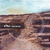

Celtic Lyrics Corner > Artists & Groups > Altan > Local Ground > Éirigh 'S Cuir Ort Do Chuid Éadaigh
|  | Éirigh 'S Cuir Ort Do Chuid Éadaigh |
| Credits : | Traditional; additional verses by Francie Mooney; arranged by Mairéad Ní Mhaonaigh, Ciaran Tourish, Dermot Byrne, Ciaran Curran & Mark Kelly |
| Appears On : | Local Ground |
| Language : | Gaeilge (Irish Gaelic) |
| Other Versions : | " Éirigh Is Cuir Ort Do Chuid Éadaigh Cóiriú " on Clannad's album Dúlamán |
| Lyrics : | English Translation : |
| Éirigh is cuir ort do chuid éadaigh | Arise now and dress yourself quickly |
| Go mbearrfaidh mé féin do chúl | 'Til I gaze once again on your brow |
| Go dtéimid 'soir Easbog na hÉirne | And we'll go to the Bishop of Erin |
| Go gceanglaítear mé 'gus tú | In wedlock to pledge our vows |
| Tá grá agus cion agam féin ort | I love and cherish you dearly |
| A chuid den tsaol éalaigh liom | Elope with me, love of my heart |
| 'S nach duine dona gan chéill | Wouldn't the person be silly or foolish |
| Óró scarfadh ó chéile sinn | That would try to keep us apart? |
| Aisling a chonaic mé 'réir | Last night in a vision I saw her |
| Ar leabaidh 'gus mé 'mo luí | As I lay asleep on my bed |
| Go dtáinig sí chugam mar fhéirín | She came to me as a treasure |
| Ainnir na gciabh-fholt buí | This beautiful golden-haired maid |
| Bhí a hórfholt snoite go féar léi | Her golden locks trailed on the green grass |
| Is níl tuile á mhéid nach gclaífeadh | A spate of beauty that none could surpass |
| Ó's, a Rí, cé'r mhiste don chléir é | And why should it worry the clergy |
| Dá gcodlóinn aréir le mnaoi? | If I slept with my true love last night? |
| A bhruinneall na maise 's na breáthacht' | Oh lady of stature and honor |
| A Rí-bhean is áille gnaoi | Oh fair one of beauty so rare |
| Tá tréithe na séimhe 's na féile | The virtues of kindness and goodness |
| Ag soilsiú ó lár mo chroí | Shine brightly from inside your heart |
| Tá clú 'nois ar mhaisiúlacht Dheirdre | There's talk of the beauty of Deirdre |
| Ar Niamh agus Helen na Traoi | Of Niamh and of Helen so fair |
| Ach da gcuirfí uilig iad le chéile | But if all were bonded together |
| Ní fheicfí iad le do thaobh | To my true love they would not compare |
| Muna dtig tú go luath ar láimh liom | If you do not come soon to be with me |
| Ní fada a bheas mé beo | No longer on earth will I stay |
| Nó tá an grá in mo chroí duit ag méadú | For this love in my heart is expanding |
| 'S mo chiapadh d'oíche is ló | And torments me by night and by day |
| Cuirfead maointe sróill agus síoda ort | I'll dress you in silks and in satins |
| 'S iad greannta le lásaí óir | Trimmed neatly in braids of gold |
| A rúnsearc déan réidh agus triall liom | My true love, prepare now and join me |
| Is caithfimid saol faoi shó | And we'll live in contentment untold |
| 'S trua gan mise 's an Niamh bheag | I long that myself and my true love |
| Na leice mílte ó chuan | Are not many leagues out to sea |
| In oileán an Chlochair Bhig Chraobhaigh | On a lonely and wooded island |
| Mar a thiteas na néalta 'un suain | Where the clouds glide silent and free |
| An áit a mbíonn nead ag an éanlaith | And small birds could peacefully nest there |
| An t-iolar, an ghéag 's an chuach | Where the eagle and cuckoo could dwell |
| Chuirfinnse geasa 'r an éan bheag | And I'd cast a spell on a small bird |
| Solas an lae thabhairt uainn | The brightness of day to quell |
| Éirigh is cuir ort do chuid éadaigh | Arise now and dress yourself quickly |
| Go mbearrfaidh mé féin do chúl | 'Til I gaze once again on your brow |
| Go dtéimid 'soir Easbog na hÉirne | And we'll go to the Bishop of Erin |
| Go gceanglaítear mé 'gus tú | In wedlock to pledge our vows |
| Tá grá agus cion agam féin ort | I love and cherish you dearly |
| A chuid den tsaol éalaigh liom | Elope with me, love of my heart |
| 'S nach duine dona gan chéill | Wouldn't the person be silly or foolish |
| Óró scarfadh ó chéile sinn | That would try to keep us apart? |